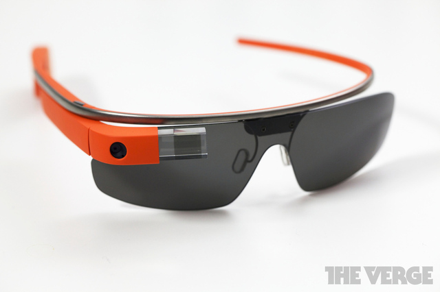

Google Glass What is it?
What it does!

Google Glass can do very many different things, some examples are listed below. Now google glass was mainly built to be different, One of it's kind something never before done! and google glass has achieved that level of difference something very unique, If you can see what they were going for you can see what it does... Google glass was made to be different and be a headset, phone, and computer all put into one device on your head. you can call, browse the web, answer phone calls, set calendar dates, set reminders.Pros & Cons
Cons:
FEATURES
| Example | What it does |
|---|---|
| Mic | >The mic comes builtin and could be used for talking with people over the internet or phoning or trying to skype them |
| GPS & Navigation | The Navigation system is a fast and easily accessible gps that could take you anywhere you desire. |
| Voice Recognition | Voice Recognition is such a great feature to be added into the google glass as it needs it everyway and makes it fully hands free. Voice Recognition can be used for many different things like Phone calls, to open applications, basically to open/ do whatever you want. |
| Visual Display | Visual Display as in the little glass block that you look through to see all the things you need to view, as your screen.. as you can where it over your reading glasses, your regular glasses it really doesn't matter you can still see the display that is in front of your eyes. Example Shown below |